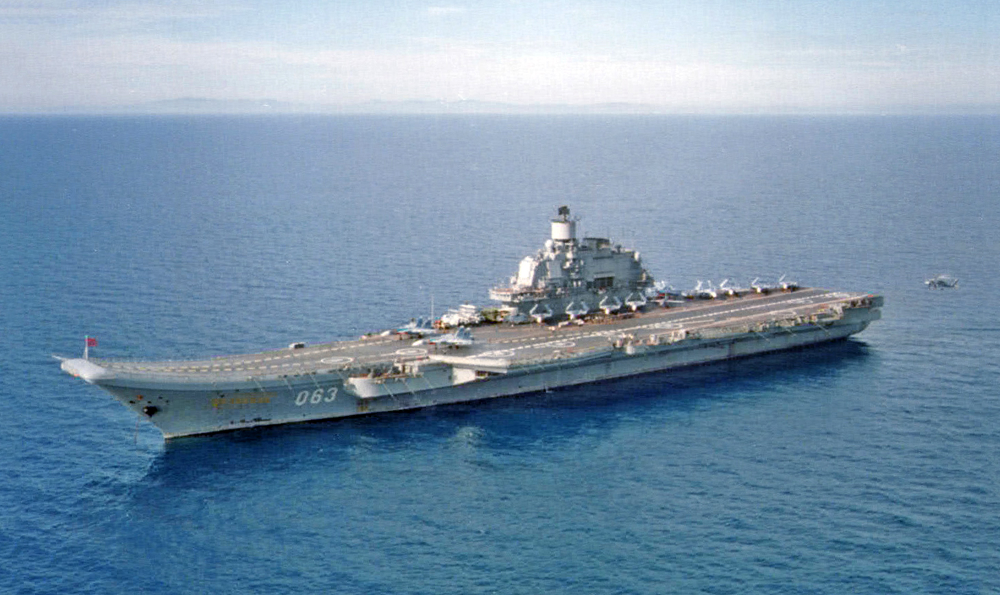

K �ervnu 2009 m�lo rusk� n�mo�nictvo k dispozici cca 60 ponorek, p�ibli�n� 70 velk�ch hladinov�ch bojov�ch lod� (k�i�n�k�, torp�doborc�, fregat a korvet), t�m�� 80 pob�e�n�ch a hl�dkov�ch �lun�, cca 40 minolovek, zhruba 70 oboj�iveln�ch v�sadkov�ch lod� a vzn�edel a 370 logistick�ch a podp�rn�ch lod�.[2] Zna�n� ��st t�chto lod� je v�ak ji� zastaral� �i neschopn� slu�by, p�i�em� pro n� nen� n�hrady. Pl�ny rozvoje a modernizace n�mo�nictva se nyn� soust�e�uj� zejm�na na ponorky. V ostatn�ch kategori�ch hroz�, �e se rusk� n�mo�nictvo stane sp�e pob�e�n� silou.[2] Slo�ky rusk�ho vojensk�ho n�mo�nictva jsou organizov�ny do Severn�ho lo�stva, Baltsk�ho lo�stva, �ernomo�sk�ho lo�stva a Tichomo�sk�ho lo�stva, Kaspick�ho lo�stva, Rusk� n�mo�n� letectvo a pob�e�n� s�ly (zahrnuj�c� N�mo�n� p�chotu a pob�e�n� baterie). Symbolika sou�asn�ho rusk�ho n�mo�nictva navazuje na tradice rusk�ho carsk�ho n�mo�nictva. Odpov�daj� ji standarty, uniformy i n�zvy lod�. Ze sov�tsk� �ry tak z�staly zejm�na p�tic�p� hv�zdy na rusk�ch letadlech. Vlajku modern�ho rusk�ho n�mo�nictva tvo�� modr� k�� v b�l�m poli.[3]-

lod�:
Korveta je rychl�, obratn� a mal� v�le�n� lo� s relativn� silnou v�zbroj�, kter� je obvykle dlouh� 50 a� 95 metr� a m� v�tlak v rozmez� od 500 do 2 000 tun. A�koliv je hlavn�m �kolem v�t�iny korvet boj s hladinov�mi plavidly protivn�ka, maj� na rozd�l od raketov�ch �lun� k dispozici tak� protivzdu�nou a protiponorkovou v�zbroj. Modern� korvety tak� �asto disponuj� p�ist�vac� plochou pro vrtuln�k.-
Korvet -79
K�i�n�k je velk� v�le�n� lo� schopn� sou�asn� monitorovat a �to�it na v�ce r�zn�ch c�l�. Historicky jsou k�i�n�ky pova�ov�ny za nejmen�� lod� schopn� prov�d�t nez�visl� vojensk� operace.
K��n�k�-5
Torp�doborec je rychl� a obratn� v�le�n� lo� se silnou raketovou, hlav�ovou a torp�dovou v�zbroj�, ur�en� k pln�n� mnoha r�znorod�ch �kol�. Jeho hlavn�m �kolem je veden� boje s letadly, ponorkami a hladinov�mi lod�mi protivn�ka na otev�en�m mo�i. Slou�� t� jako doprovod velk�ch lod� ve flotile nebo bojov� skupin�.
Torp�doborec-12
Současná fregata sd�l� se svou p�edch�dkyn� pouze ozna�en�. V modern�m vojensk�m n�zvoslov� je fregata mal�, v�estrann� a spolehliv� lo�. Je zpravidla mnohem men�� ne� torp�doborec a jej�m hlavn�m �kolem je boj s ponorkami a doprovod konvoj� �i oboj�iveln�ch v�sadkov�ch svaz�. V n�kter�ch n�mo�n�ch sil�ch (nap��klad. Nizozemsk� kr�lovsk� n�mo�nictvo �i N�meck� n�mo�nictvo) se jako fregata ozna�uj� jednotky v�t�� (nap�. t��da De Zeven Provinci�n �i t��da Sachsen), kter� by jinak sv�mi parametry pat�ily mezi torp�doborce. D�vodem je zejm�na politicky motivovan� snaha o zd�razn�n� obrann�ho charakteru dan� n�mo�n� s�ly, nebo� fregaty jsou na rozd�l od torp�doborc� tradi�n� vn�m�ny jako jednotky obrann�.